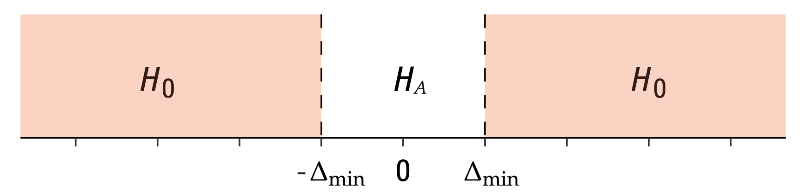

Two-sample equivalence test#
To perform two-sample equivalence test, we’ll use the same procedure as Welch’s two-sample \(t\)-test, but this time prove that two unknown population \(X \sim \mathcal{N}(\mu_X, \sigma_X)\) and \(Y \sim \mathcal{N}(\mu_Y, \sigma_Y)\) are not different.
import matplotlib.pyplot as plt
import numpy as np
import seaborn as sns
import pandas as pd
%matplotlib inline
%config InlineBackend.figure_format = 'retina'
\(\def\stderr#1{\mathbf{se}_{#1}}\) \(\def\stderrhat#1{\hat{\mathbf{se}}_{#1}}\) \(\newcommand{\Mean}{\textbf{Mean}}\) \(\newcommand{\Var}{\textbf{Var}}\) \(\newcommand{\Std}{\textbf{Std}}\) \(\newcommand{\Freq}{\textbf{Freq}}\) \(\newcommand{\RelFreq}{\textbf{RelFreq}}\) \(\newcommand{\DMeans}{\textbf{DMeans}}\) \(\newcommand{\Prop}{\textbf{Prop}}\) \(\newcommand{\DProps}{\textbf{DProps}}\)
Data#
Two samples of numerical observations \(\mathbf{x}=[x_1, x_2, \ldots, x_n]\) and \(\mathbf{y}=[y_1, y_2,\ldots, y_m]\) from independent populations.
Modeling assumptions#
We assume the unknown populations are normally distributed \(\textbf{(NORM)}\), or the sample is large enough \(\textbf{(LARGEn)}\).
Hypotheses#
\(H_0: |\mu_X - \mu_Y| \geq \Delta_{\text{min}}\) versus \(H_A: |\mu_X - \mu_Y| < \Delta_{\text{min}}\).

Statistical design#
for \(n=5\) …
for \(n=20\) …
sesoi = 4
Estimates#
Compute the sample means \(\overline{\mathbf{x}} = \Mean(\mathbf{x})\), \(\overline{\mathbf{y}} = \Mean(\mathbf{y})\), and the difference between means \(\hat{d} = \DMeans(\mathbf{x}, \mathbf{y}) = \overline{\mathbf{x}} - \overline{\mathbf{y}}\).
Formulas#
The estimated standard error of the difference between means estimator is
where \(s_{\mathbf{x}}\) and \(s_{\mathbf{y}}\) are the sample standard deviations.
Test statistic#
Compute the \(t\)-statistic \(t = \frac{\hat{d} - 0}{ \stderrhat{\hat{d}} }\).
Sampling distribution#
Student’s \(t\)-distribution with \(\nu_d\) degrees of freedom,
where the degrees of freedom parameter is computed using
the helper function calcdf:
\(\nu_d = \tt{calcdf}(s_{\mathbf{x}}, n, s_{\mathbf{y}}, m)\),
which implements the Welch–Satterthwaite formula.
P-value calculation#
# from ministats import tost_dmeans
# %psource tost_dmeans
To perform the two-sample \(t\)-test on the samples xs and ys,
we call tost_dmeans(xs, ys).
Examples#
For all the examples we present below, we assume the unknown distribution are normally distributed
from scipy.stats import norm
Example A: populations are different#
Suppose the \(X\)-population is normally distributed with mean \(\mu_{X}=104\) and standard deviation \(\sigma_{X} = 3\), while the \(Y\)-population is normally distributed with mean \(\mu_{X}=100\) and standard deviation \(\sigma_{X} = 5\)
muXA = 104
sigmaXA = 3
rvXA = norm(muXA, sigmaXA)
muYA = 100
sigmaYA = 5
rvYA = norm(muYA, sigmaYA)
Let’s generate a sample xAs and yAs of size \(n=20\) from the random variables \(X = \texttt{rvXA}\) and \(Y = \texttt{rvYA}\).
np.random.seed(42)
# generate a random sample of size n=20 from rvX
n = 20
xAs = rvXA.rvs(n)
# generate a random sample of size m=20 from rvY
m = 20
yAs = rvYA.rvs(m)
xAs, yAs
(array([105.49014246, 103.5852071 , 105.94306561, 108.56908957,
103.29753988, 103.29758913, 108.73763845, 106.30230419,
102.59157684, 105.62768013, 102.60974692, 102.60281074,
104.72588681, 98.26015927, 98.8252465 , 102.31313741,
100.96150664, 104.942742 , 101.27592777, 99.7630889 ]),
array([107.32824384, 98.8711185 , 100.33764102, 92.87625907,
97.27808638, 100.55461295, 94.24503211, 101.87849009,
96.99680655, 98.54153125, 96.99146694, 109.26139092,
99.93251388, 94.71144536, 104.11272456, 93.89578175,
101.04431798, 90.20164938, 93.35906976, 100.98430618]))
dhatA = np.mean(xAs) - np.mean(yAs)
dhatA
np.float64(4.815979892644748)
dAs = xAs - yAs
with plt.rc_context({"figure.figsize":(7,1)}):
sns.stripplot(x=dAs, jitter=0, alpha=0.5)
{kind=link}
import seaborn as sns
with plt.rc_context({"figure.figsize":(7,1)}):
sns.stripplot(x=xAs, jitter=0, alpha=0.5)
sns.stripplot(x=yAs, jitter=0, alpha=0.5)
{kind=link}
To obtain the \(p\)-value, we first compute the observed \(t\)-statistic, then calculate the tail probabilities in the two tails of the standard normal distribution \(T_0 \sim \mathcal{T}(\nu_d)\).
from scipy.stats import t as tdist
from ministats import calcdf
# Calculate the sample statistics
from ministats import mean, std
obsdhat = mean(xAs) - mean(yAs)
sx, sy = std(xAs), std(yAs)
# Calculate the standard error and the t-statistic
seD = np.sqrt(sx**2/n + sy**2/m)
# Calculate the degrees of freedom
dfD = calcdf(sx, n, sy, m)
# Positive hypothesis test
obstplus = (obsdhat - sesoi) / seD
rvT0plus = tdist(df=dfD)
pvalueplus = rvT0plus.cdf(obstplus)
print("obst+", obstplus, " pvalue+", pvalueplus)
# Negative hypothesis test
obstminus = (obsdhat - (-sesoi)) / seD
rvT0minus = tdist(df=dfD)
pvalueminus = 1 - rvT0minus.cdf(obstminus)
print("obst-", obstminus, " pvalue-", pvalueminus)
# the p-value is the largest of the two subtests
pvalue = max(pvalueplus, pvalueminus)
pvalue
obst+ 0.6479055169799628 pvalue+ 0.7390885154632982
obst- 7.000076915517506 pvalue- 3.7301428501557155e-08
np.float64(0.7390885154632982)
The helper function ttost_ind in the statsmodels module performs
exactly the same sequence of steps to compute the \(p\)-value.
from statsmodels.stats.weightstats import ttost_ind
ttost_ind(xAs, yAs, low=-sesoi, upp=sesoi, usevar='unequal')
(np.float64(0.7390885154633053),
(np.float64(7.000076915517528),
np.float64(3.730142848917544e-08),
np.float64(30.95572939468825)),
(np.float64(0.6479055169799854),
np.float64(0.7390885154633053),
np.float64(30.95572939468825)))
The \(p\)-value we obtain is 0.739, which is above the cutoff value \(\alpha=0.05\), so our conclusion is we fail to reject the null hypothesis: the means of the two unknown populations differ significantly from the smallest effect size of interest \(\Delta_{\text{min}}\).
Example B: sample from a population as expected under \(H_0\)#
muXB = 100
sigmaXB = 5
rvXB = norm(muXB, sigmaXB)
muYB = muXB
sigmaYB = sigmaXB
rvYB = norm(muYB, sigmaYB)
Let’s generate a sample xs of size \(n=20\) from the random variable \(X = \texttt{rvX}\),
which has the same distribution as the theoretical distribution we expect under the null hypothesis.
np.random.seed(31)
# generate a random sample of size n=20 from rvX
n = 20
xBs = rvXB.rvs(n)
# generate a random sample of size m=20 from rvY
m = 20
yBs = rvYB.rvs(m)
# xBs, yBs
np.mean(xBs), np.mean(yBs)
(np.float64(98.49345582110894), np.float64(99.90646412616485))
obsdhatB = np.mean(xBs) - np.mean(yBs)
obsdhatB
np.float64(-1.4130083050559108)
sxB, syB = std(xBs), std(yBs)
# Calculate the standard error and the t-statistic
seDB = np.sqrt(sxB**2/n + syB**2/m)
seDB
np.float64(1.3075392073324235)
import seaborn as sns
with plt.rc_context({"figure.figsize":(7,1)}):
sns.stripplot(x=xBs, jitter=0, alpha=0.5)
sns.stripplot(x=yBs, jitter=0, alpha=0.5)
{kind=link}
dfB = pd.DataFrame({"x": xBs, "y":yBs})
with plt.rc_context({"figure.figsize":(7,1)}):
sns.stripplot(dfB, orient="h")
{kind=link}
from scipy.stats import t as tdist
from ministats import calcdf
# Calculate the sample statistics
from ministats import mean, std
obsdhatB = mean(xBs) - mean(yBs)
print("obsdhatB =", obsdhatB)
sxB, syB = std(xBs), std(yBs)
# Calculate the standard error and the t-statistic
seDB = np.sqrt(sxB**2/n + syB**2/m)
print("seDB =", seDB, " sesoi/seDB =", sesoi/seDB)
# Calculate the degrees of freedom
dfDB = calcdf(sxB, n, syB, m)
print("dfDB =", dfDB)
# Positive hypothesis test
obstplus = (obsdhatB - sesoi) / seDB
rvT0plus = tdist(df=dfDB)
pvalueplus = rvT0plus.cdf(obstplus)
print("obst+ =", obstplus, " pvalue+ =", pvalueplus)
# Negative hypothesis test
obstminus = (obsdhatB - (-sesoi)) / seDB
rvT0minus = tdist(df=dfDB)
pvalueminus = 1 - rvT0minus.cdf(obstminus)
print("obst- =", obstminus, " pvalue- =", pvalueminus)
# the p-value is the largest of the two sub-tests
pvalue = max(pvalueplus, pvalueminus)
pvalue
obsdhatB = -1.4130083050558824
seDB = 1.3075392073324235 sesoi/seDB = 3.0591816884486405
dfDB = 37.59083188299806
obst+ = -4.139843971561842 pvalue+ = 9.438014051414072e-05
obst- = 1.978519405335439 pvalue- = 0.02761615756744984
np.float64(0.02761615756744984)
from statsmodels.stats.weightstats import ttost_ind
ttost_ind(xBs, yBs, low=-sesoi, upp=sesoi, usevar='unequal')
(np.float64(0.02761615756745112),
(np.float64(1.978519405335417),
np.float64(0.02761615756745112),
np.float64(37.59083188299806)),
(np.float64(-4.139843971561863),
np.float64(9.438014051413471e-05),
np.float64(37.59083188299806)))
The \(p\)-value we obtain is 0.0276, which is below the cutoff value \(\alpha=0.05\) so our conclusion is that we’ve reject the null hypothesis: this means of two samples are not significantly different.
Confidence interval for the effect size#
from ministats import ci_dmeans
The confidence interval for the effect size \(\Delta = \mu_X - \mu_Y\) in Example A is
ci_dmeans(xAs, yAs, alpha=0.1, method='a')
[np.float64(2.6805293867922644), np.float64(6.951430398497231)]
The confidence interval for the effect size \(\Delta = \mu_X - \mu_Y\) in Example B is
ci_dmeans(xBs, yBs, alpha=0.1, method='a')
[np.float64(-3.618059499797434), np.float64(0.7920428896856118)]
Discussion#
Links#
Comprare with R#
> install.packages("TOSTER")
> library(TOSTER)
> tsum_TOST(m1 = 98.49345582110894, sd1 = 3.913169794238548, n1 = 20,
+ m2 = 99.90646412616485, sd2 = 4.345144155915784, n2 = 20,
+ eqb = 4, alpha = 0.05, var.equal = FALSE)
Welch Modified Two-Sample t-Test
The equivalence test was significant, t(37.59) = 1.979, p = 2.76e-02
The null hypothesis test was non-significant, t(37.59) = -1.081, p = 2.87e-01
NHST: do not reject null significance hypothesis that the effect is equal to zero
TOST: reject null equivalence hypothesis
TOST Results
t df p.value
t-test -1.081 37.59 0.287
TOST Lower 1.979 37.59 0.028
TOST Upper -4.140 37.59 < 0.001
Effect Sizes
Estimate SE C.I. Conf. Level
Raw -1.4130 1.3075 [-3.6181, 0.792] 0.9
Hedges g(av) -0.3349 0.3412 [-0.8463, 0.1809] 0.9
Simulation to check TOST sensitivity#
Let’s run a simulation to see how the accuracy of the TOST procedure
for detecting when two samples come from the same population.
We’ll use the standard normal \(Z \sim \mathcal{N}(0,1)\) as the population,
and run ttost_ind for different choices of sesoi and sample sizes n=m.
def one_equiv_test(mu, sigma, n, m, sesoi):
"""
Run TOST on two samples from the same population.
"""
# two identical populations
muX, sigmaX = mu, sigma
muY, sigmaY = mu, sigma
rvX = norm(muX, sigmaX)
rvY = norm(muY, sigmaY)
# generate a random samples
xs = rvX.rvs(n)
ys = rvY.rvs(m)
# run TOST
p, _, _ = ttost_ind(xs, ys, low=-sesoi, upp=sesoi, usevar='unequal')
return p
def replicate_many_equiv_tests(mu, sigma, n, m, sesoi, N=1000, cutoff=0.05):
pvals = np.empty(N)
for i in range(N):
pval = one_equiv_test(mu=mu, sigma=sigma, n=n, m=m, sesoi=sesoi)
pvals[i] = pval
prop = sum(pvals < cutoff) / len(pvals)
return prop
SIMULATE = False # don't need to re-run simulation every time
if SIMULATE:
np.random.seed(33)
sesois = np.arange(0.2, 1.5, 0.1)
ns = [20, 30, 40, 60, 100]
results = pd.DataFrame(columns=["sesoi", "n", "prop"])
for i, (sesoi, n) in enumerate(product(sesois, ns)):
print(f"{i} running replicate_many_equiv_tests for {sesoi=} and {n=}")
prop = replicate_many_equiv_tests(mu=0, sigma=1, n=n, m=n, sesoi=sesoi)
results.loc[i] = [sesoi, n, prop]
else:
results = pd.DataFrame.from_records(
[ (0.2, 20., 0. ), (0.2, 30., 0. ), (0.2, 40., 0. ),
(0.2, 60., 0. ), (0.2, 100., 0. ), (0.3, 20., 0. ),
(0.3, 30., 0. ), (0.3, 40., 0. ), (0.3, 60., 0.025),
(0.3, 100., 0.384), (0.4, 20., 0.001), (0.4, 30., 0.012),
(0.4, 40., 0.115), (0.4, 60., 0.411), (0.4, 100., 0.747),
(0.5, 20., 0.035), (0.5, 30., 0.203), (0.5, 40., 0.412),
(0.5, 60., 0.723), (0.5, 100., 0.932), (0.6, 20., 0.186),
(0.6, 30., 0.497), (0.6, 40., 0.704), (0.6, 60., 0.898),
(0.6, 100., 0.992), (0.7, 20., 0.395), (0.7, 30., 0.708),
(0.7, 40., 0.865), (0.7, 60., 0.971), (0.7, 100., 0.996),
(0.8, 20., 0.606), (0.8, 30., 0.862), (0.8, 40., 0.94 ),
(0.8, 60., 0.993), (0.8, 100., 1. ), (0.9, 20., 0.761),
(0.9, 30., 0.937), (0.9, 40., 0.975), (0.9, 60., 0.998),
(0.9, 100., 1. ), (1. , 20., 0.853), (1. , 30., 0.968),
(1. , 40., 0.998), (1. , 60., 1. ), (1. , 100., 1. ),
(1.1, 20., 0.927), (1.1, 30., 0.991), (1.1, 40., 0.999),
(1.1, 60., 1. ), (1.1, 100., 1. ), (1.2, 20., 0.971),
(1.2, 30., 0.998), (1.2, 40., 1. ), (1.2, 60., 1. ),
(1.2, 100., 1. ), (1.3, 20., 0.982), (1.3, 30., 0.999),
(1.3, 40., 1. ), (1.3, 60., 1. ), (1.3, 100., 1. ),
(1.4, 20., 0.992), (1.4, 30., 1. ), (1.4, 40., 1. ),
(1.4, 60., 1. ), (1.4, 100., 1. ) ],
columns=["sesoi", "n", "prop"]
)
TOST sensitivity results#
ax = sns.lineplot(x=results["sesoi"], y=results["prop"], hue=results["n"])
ax.set_title("Proportion of TOST tests that correctly reject H0 \n for two samples of size n from a standard normal")
ax.set_ylabel("Proportion of TOST results with p < 0.05");
{kind=link}
The above graph shows that, for \(n=30\) we need to use sesoi of around 0.7 standard deviations if we want TOST to have 80% power at detecting the equivalence.
For \(n=20\) we need sesoi to be 1 standard deviation if we want 80% power.